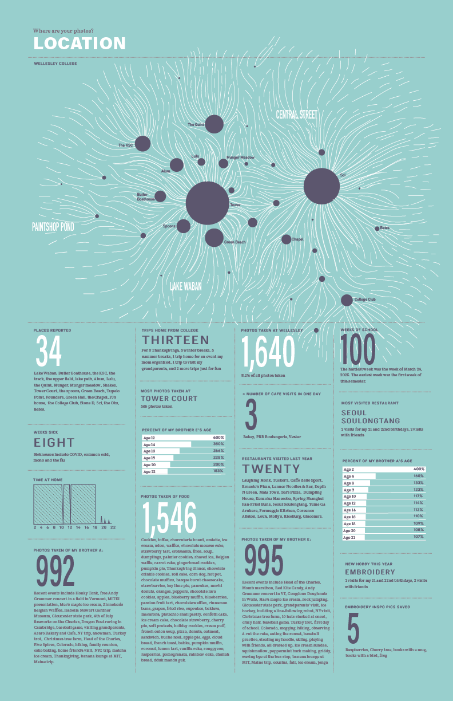
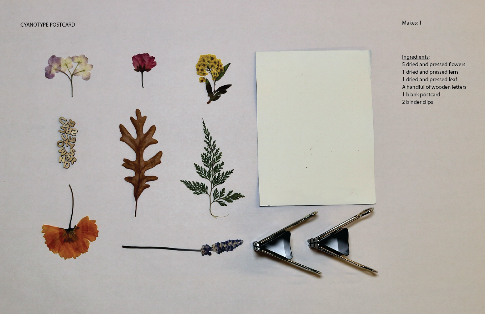

Product Portfolio
Product manager with experience in hardware-software integration, AI/ML products, and data-driven decision making. Skilled at scoping MVPs, prioritizing features based on ROI, and translating technical complexity into user value. Track record includes: achieving 88.75% ML model accuracy, increasing production from ideation sessions by 40%, and shipping an autonomous navigation system through iterative development.

AI-Powered Copper Scrap Sorting
Led product strategy for an automated sorting platform that reduces recycling costs by 30%+. Defined requirements, prioritized sensor MVP, and validated market fit with industrial partners through data-driven decision-making.

Autonomous Surface Vehicle
Owned end-to-end product development of GPS-navigated robotic boat. Defined success metrics, prioritized features through iterative testing, and delivered working prototype by balancing technical constraints with user needs.
Underwater Muon Detection System
Led experimental physics project measuring cosmic ray attenuation in water. Designed waterproof housing, optimized detector configuration through iterative testing, and delivered results within budget and safety constraints.

College Life Analytics Dashboard
Designed data product visualizing 100 weeks of behavioral patterns. Identified key insights from 1,640+ photos and location data to understand user engagement patterns and optimize campus experience.

Process Documentation Project
Designed user-centered instructional experience for cyanotype printing. Reduced learning curve through clear information architecture, making complex analog process accessible to new users.
Product Management Approach
Discovery & Strategy
- • User research & stakeholder interviews
- • Market opportunity analysis
- • Problem definition & hypothesis validation
- • Competitive landscape assessment
Execution & Delivery
- • MVP scoping & feature prioritization
- • Agile/iterative development cycles
- • Cross-functional team coordination
- • Technical trade-off decision making
Measurement & Impact
- • Success metrics definition (KPIs)
- • Data-driven performance analysis
- • ROI & cost-benefit evaluation
- • Continuous improvement iteration